Breeze converts inbound emails from multiple sources into Gemini items. An item can be viewed as a Ticket, Request, Enquiry, etc Breeze can pull emails and place them inside any Gemini project.
A Breeze Queue consists of at least one mailbox. You can define multiple Queues and process many mailbox accounts.
In the following example all emails to sales@fenrise.com are placed into the Sales queue.
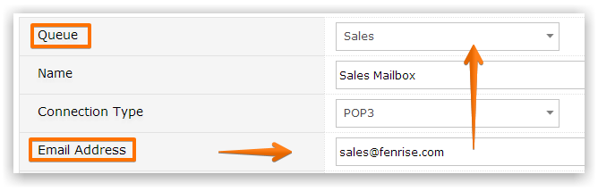
You can define email templates sent to customers/end-users when they send emails (e.g. "thanks, we have opened a ticket").
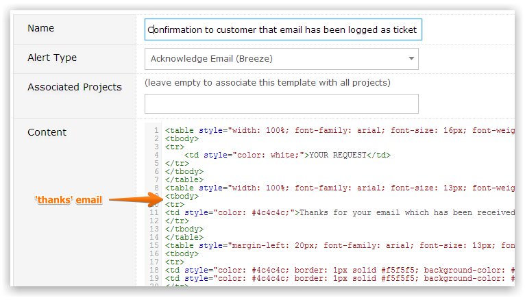
Your customers then receive an acknowledgment email detailing their request and the Gemini ticket number.
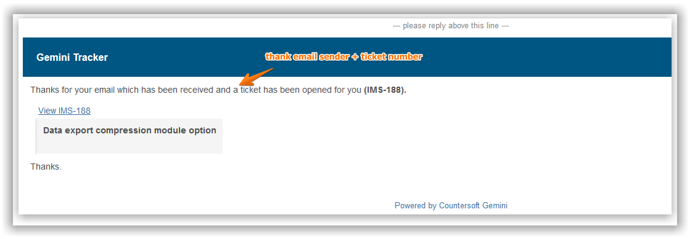
NoteOnly Gemini administrators can configure Breeze
An email that is processed by Breeze is viewable within Gemini just like another other item. The sender's email address is displayed.
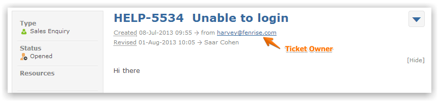
You can then work on the ticket and respond back to the sender.
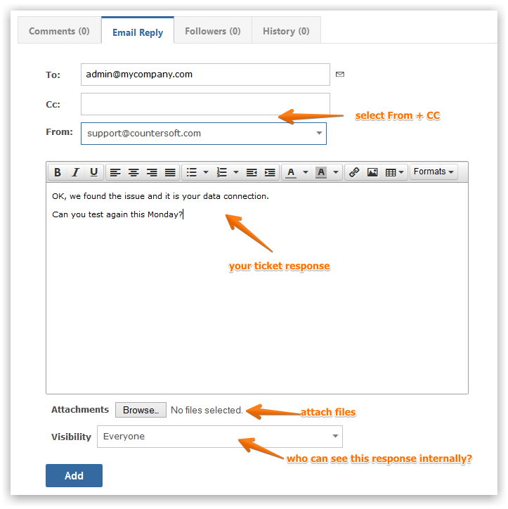
You can check to see what changed on the ticket since your last reply.
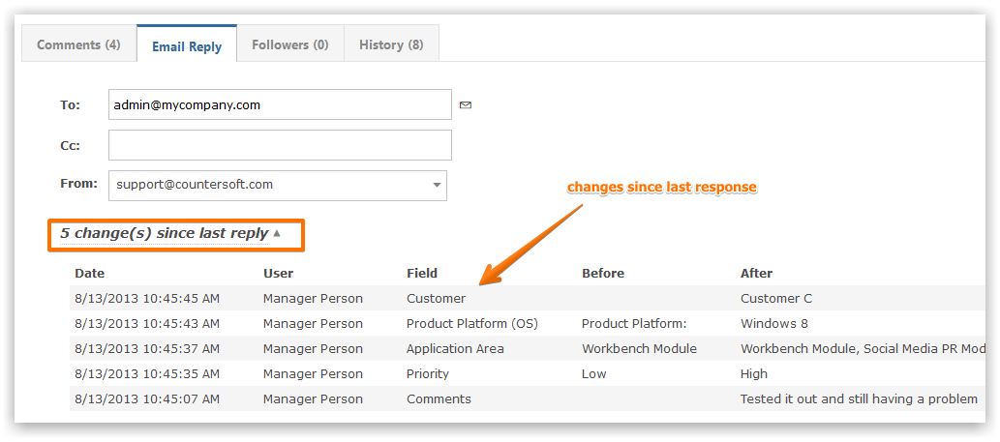
The sender of the ticket then receives your response as an email.
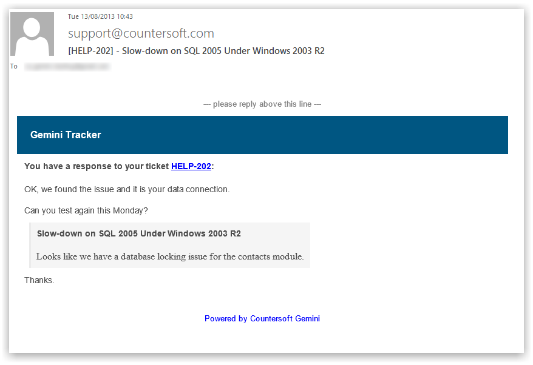
The Microsoft Outlook connector allows one-click conversion of emails into tickets.
When viewing an email the Gemini Breeze toolbar will appear.
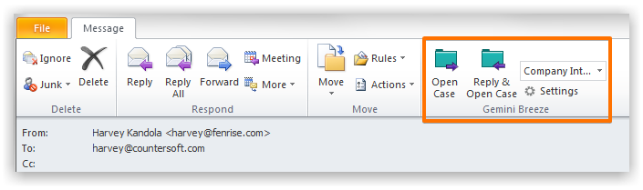
There are two options to turn the email into a ticket:
You can specify the Gemini project where new tickets should be created.
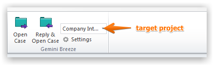
If the toolbar options are unavailable click Settings and provide your Gemini credentials.
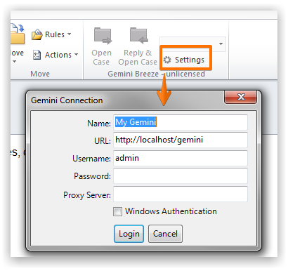
The Settings dialog allows every user to configure their Breeze Outlook connector preferences.
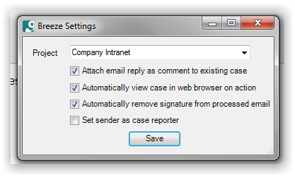